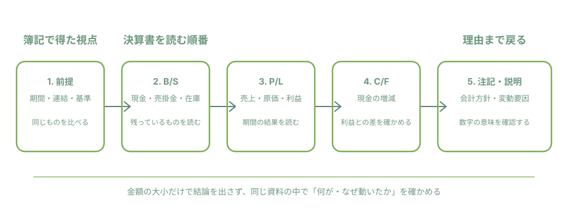

簿記2級・1級は
財務諸表分析に役立つ？
役立ちます。ただし、簿記を学べば企業の将来や株価を言い当てられる、という意味ではありません。簿記の強みは、決算書の数字を見たときに「これは何を表す数字か」「なぜ動いたのか」を順序立てて尋ねられることです。

簿記の知識は「見る場所」を増やす
簿記2級では、商品売買、債権・債務、固定資産、財務諸表、連結会計などを学びます。簿記1級では、キャッシュ・フロー計算書、連結、企業結合、減損など、開示資料を読むときに出会う論点がさらに増えます。試験問題を解く力と、企業を評価することは別ですが、科目名と数字の関係を追えるようになります。
| 学習で身につく視点 | 決算書で確かめる場所 | 最初の問い |
|---|---|---|
| 売掛金・棚卸資産・借入金 | 貸借対照表（B/S） | いま何が残り、何を返す必要があるか |
| 売上・売上原価・利益 | 損益計算書（P/L） | その期間に何で稼ぎ、何に費用がかかったか |
| 利益と現金の違い | キャッシュ・フロー計算書（C/F） | 利益と現金の増減は、なぜ同じでないのか |
| 連結・減損・会計方針 | 注記・事業等の説明 | 数字の範囲や変動理由は何か |
読む前に、同じ条件の数字かを確認する
数字を比べる前に、資料の表紙や冒頭で「対象期間」「連結か個別か」「採用している会計基準」を確認します。ここが違う数字を並べても、増減の意味を判断できません。上場会社の開示資料は、金融庁のEDINETや各社の公式IR資料室で確認できます。
身近な商売でB/SとP/Lをつなぐ
例えば、週末だけサンドイッチを販売する架空のお店を考えます。お客さんに先に商品を渡して、後日入金されるなら、その未回収分は「売掛金」。仕入れた食材がまだ残っているなら「棚卸資産」。運転資金を借りていれば「借入金」です。これらは期末時点の残高なので、B/Sで確認します。
一方、一定期間に売れたサンドイッチの売上、売るために使った食材などの費用、その差額としての利益はP/Lで見ます。同じ「食材」でも、残っていればB/S、売るために使えばP/Lに関わる――この移り変わりを追う感覚が、簿記から決算書へ進む入口です。
決算書を読む5ステップ
- 資料と期間をそろえる公式の有価証券報告書や決算資料を開き、対象期間、連結・個別、会計基準を記録します。
- B/Sで「残っているもの」を見る現金、売掛金、棚卸資産、借入金など、期末時点に残る科目を見ます。増減は結論ではなく、次に理由を探すための入口です。
- P/Lで「その期間の結果」を見る売上、原価、販売費及び一般管理費、利益などを同じ期間で確認します。利益だけを一行で判断しません。
- C/Fで現金との違いを確かめる利益が出ていても、売掛金や在庫の動きなどにより、現金の増減は一致しないことがあります。営業・投資・財務の各活動に分けて見ます。
- 注記と説明で理由へ戻る会計方針、事業の範囲、主要な変動要因の説明を確認します。「何が動いたか」から「なぜ動いたか」へ進む段階です。
簿記1級の論点は、注記を読む助けになる
簿記1級で扱う連結、企業結合、減損、キャッシュ・フロー計算書は、数字だけでは分かりにくい背景を読むときの手がかりになります。たとえば連結なら「どこまでを一つのグループとして示しているか」、減損なら「将来の見積りに関わる資産をどう確認しているか」という問いにつながります。用語を知っていても答えを急がず、資料の注記を実際に読む姿勢が大切です。
読み間違いを減らす3つの注意
- 売上や利益と、手元の現金を同じものとみなさない。
- 前年より増えた・減ったという事実だけで、良し悪しを決めない。
- 連結と個別、会計基準、決算期が異なる数字をそのまま比べない。
この3つを守るだけでも、簿記の知識を「用語当て」ではなく、資料を丁寧に読むための道具に変えられます。この記事は投資判断や企業の優劣を示すものではありません。判断が必要な場面では、必ず最新の公式開示資料と必要に応じて専門家の助言を確認してください。
最初の一歩：3行だけ記録する
気になる会社の公式資料を一つ開き、次の3行を書き留めてみてください。①資料名と決算期、②連結・個別と会計基準、③B/S・P/L・C/Fのうち一つの科目と、説明が載っている場所。数字をたくさん集めるより、出どころと意味を一つずつ確かめる習慣のほうが、簿記の知識を長く活かせます。